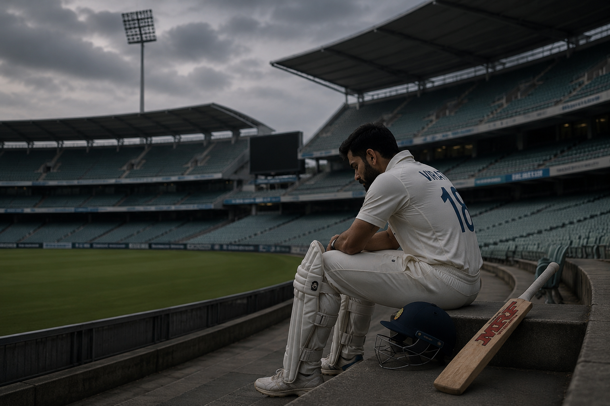

The Auction Night Nobody Prepares You For
There's a version of auction night that everybody sees. The one on TV. Names flashing on screen, paddles going up, prices climbing into the crores, commentators losing their minds, players' faces appearing next to numbers that look more like phone numbers than salaries. That version is entertainment. It's spectacle. It's designed to make you feel like every cricketer who enters the auction room is about to become a millionaire.
Then there's the other version. The one you don't see.
It's a player sitting in a hotel room somewhere, watching his own face appear on screen and then disappear. Base price flashed. Auctioneer's call goes out. Silence. No paddle. No bid. No team. The auctioneer moves on to the next name, and just like that, a man who spent twelve months training, performing, hoping, and believing that this year would be different is told, in front of millions of people, that nobody wants him.
No phone call. No rejection letter. No meeting where someone explains what went wrong. Just silence. And then the TV cuts to the next exciting bid, and the world moves on like nothing happened.
That's what unsold looks like from the inside. And nobody ever talks about what comes after.
From Crores to Nothing

The financial cliff that unsold IPL players fall off is one of the most brutal in professional sport. And it's brutal precisely because the heights are so extreme.
A player earning ₹5-10 crore in an IPL season is living a particular kind of life. Five-star hotels during the tournament. Business class flights. Premium gym memberships. A nutritionist on call. The best cricket equipment money can buy. An agent managing his schedule. A social media manager curating his image. An entire ecosystem of comfort and support, built around the assumption that the money will keep coming.
Then the auction happens, and it doesn't.
The alternative? Domestic cricket. Ranji Trophy match fees are roughly ₹5-10 lakh per season. Not per match. Per season. That's the entire season of first-class cricket paying you less than what a single IPL match used to earn you in a day.
Most players don't go bankrupt overnight. But the lifestyle adjustment is violent. The sponsorship calls stop. The brand deals dry up. The endorsement money, which for many players was actually larger than their IPL salary, evaporates because brands want faces that are on TV, not faces playing in front of 200 people at a Ranji ground in Rajkot.
The Names You Stopped Hearing
This is the part that hits different, because these aren't hypothetical people. These are names you used to cheer for.
Piyush Chawla. Over 150 IPL wickets. Won the 2011 World Cup with India. Was bought for ₹6.75 crore by KKR in 2020. Then the bids stopped coming. A man with 150+ IPL wickets couldn't find a team willing to spend base price on him.
Manish Pandey. The first Indian to score an IPL century. Represented India in international cricket. Once earned ₹11 crore in a single IPL season. Then, slowly, the calls dried up. No dramatic exit. No scandal. He just stopped being wanted.
Stuart Binny. Played 6 Tests and 14 ODIs for India. Held the record for best ODI bowling figures by an Indian (6/4) for years. Went unsold. Multiple times. Eventually stopped entering the auction entirely.
Dhawal Kulkarni. Over 90 IPL matches. Represented India. Reliable, professional, never caused problems. Went unsold in consecutive auctions and quietly faded from the conversation.
None of these players did anything wrong. They didn't fail dramatically. They didn't have career-ending controversies. They just got older, or slower, or less flashy, and the IPL, which runs on youth and hype, moved on to newer models.
"The IPL doesn't owe you anything. That's the first thing you learn when you stop getting picked. The second thing you learn is that nobody told you that when you were getting ₹10 crore."Former IPL player on the experience of going unsold
When Your Phone Stops Ringing
The money is one thing. The silence is worse.
When you're in the IPL, your phone never stops. Your agent calls about a new deal. The franchise coordinator calls about practice timings. Journalists call for quotes. Fans message on Instagram. Brands DM about collaborations. Your life has a constant soundtrack of being wanted, being relevant, being somebody.
When you go unsold, that soundtrack just... stops. Not gradually. Overnight.
Multiple cricketers have spoken about this privately, and a few have been brave enough to say it publicly: the mental health impact of going from IPL fame to IPL invisibility is devastating. It's not just disappointment. It's an identity crisis. For years, you were "that IPL player." That was your introduction at events, your identifier in conversations, the thing your relatives proudly told their friends about. When the IPL takes that away, who are you?
The BCCI has started offering mental health support programs, and franchises are more aware of the issue than they used to be. But the fundamental structure hasn't changed. The IPL is designed to create superstars, not to catch them when they fall. That job gets left to the player, his family, and whatever support network he managed to build while the money was flowing.
The gap between IPL and domestic cricket earnings is among the widest in professional sport. A player earning ₹10 crore in the IPL (~$1.2 million) could return to domestic cricket the following year and earn ₹5-10 lakh (~$6,000-12,000) for an entire Ranji Trophy season. That's roughly a 99% pay cut.
What They Actually Do Next

The lucky ones plan ahead. The smart ones save money during their IPL years, invest wisely, and build skills outside cricket that give them options when the playing career ends. But "lucky" and "smart" are easy words to say about someone else's life. When you're 23 and earning ₹8 crore, the idea that this will stop feels impossible. Nobody thinks it'll happen to them. Until it does.
Here's what the post-IPL path actually looks like for most players:
Domestic cricket. The Ranji Trophy, Syed Mushtaq Ali Trophy, Vijay Hazare Trophy. The standard of cricket is high. The pay is low. The crowds are almost non-existent. But it keeps you in the game, keeps your skills sharp, and occasionally provides a path back to the IPL if you perform well enough to catch someone's eye again.
Overseas leagues. The Big Bash in Australia, the Caribbean Premier League, county cricket in England, and a growing number of smaller T20 leagues around the world. These pay reasonably well and offer international exposure, but they're not the IPL. Nothing is.
Coaching. An increasing number of retired players are moving into coaching, either at IPL academies, state cricket associations, or private coaching setups. The BCCI's coaching certification program has made this path more structured, but coaching pays a fraction of playing.
Commentary and media. A few players, usually the ones with strong personalities or communication skills, transition into cricket analysis, commentary, or content creation. This is the most visible post-cricket career, but it's available to very few.
Business. Some players invest their IPL earnings into businesses — restaurants, fitness centers, cricket academies, real estate. The success rate varies wildly, and the skills that make you a good cricketer have almost nothing in common with the skills that make you a good entrepreneur.
The System That Builds You Up and Throws You Out
None of this is meant to make you feel sorry for cricketers who earned crores. That would be patronizing, and the players themselves would reject it. The point is something different. The point is that the IPL, for all its brilliance, for all the careers it's created and the cricket it's transformed, has a fundamental structural problem that nobody wants to address because addressing it would cost money and reduce spectacle.
The system creates overnight millionaires. It surrounds them with luxury, fame, and attention. It makes them feel invincible for a few years. And then, when their pace drops by 5 kmph or their reflexes slow by a fraction of a second, it replaces them with a younger, cheaper model and moves on without looking back.
There is no pension plan for IPL players. No guaranteed post-career support. No structured transition program. No obligation from any franchise to help a player they've profited from for five years find his footing when they decide he's no longer useful. The contract ends, and so does the relationship.
Some players reinvent themselves and find new purpose. Others struggle quietly, far from the cameras that used to follow them everywhere. The IPL will keep making new stars. The question is whether it has any responsibility to the ones it's finished making.
Every auction creates heroes. But nobody counts the people who walk out of that room with nothing. And the number, every year, is bigger than you'd think.
📷 Image Credits: Images via BCCI/IPL
Frequently Asked Questions
What happens to IPL players who go unsold?
Players who go unsold typically return to domestic cricket, play in smaller T20 leagues abroad, pursue coaching, or retire. The financial and emotional impact can be severe, especially for those with previous multi-crore contracts.
How much do domestic cricketers earn in India?
A domestic cricketer playing Ranji Trophy earns approximately ₹5-10 lakh per season from match fees — a dramatic drop from IPL earnings of ₹5-15 crore.
Which famous cricketers went unsold at IPL auction?
Steve Smith, Aaron Finch, Suresh Raina, Piyush Chawla, Stuart Binny, and Dhawal Kulkarni have all gone unsold at IPL auctions at some point.
Do cricketers suffer mental health issues after being dropped?
Yes. Multiple cricketers have spoken about depression, anxiety, and identity loss after being dropped or going unsold. Cricket boards have increasingly begun offering mental health support.
Can unsold IPL players be picked as replacements?
Yes. Unsold players can be signed as injury replacements during the season, but this is uncertain and depends on circumstances outside the player's control.